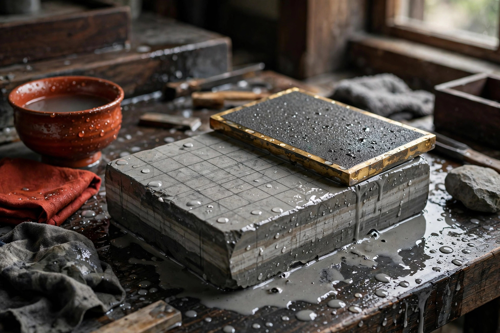

天然砥石のメンテナンス ― 面直しの方法と保管のコツ

天然砥石は、平面が保たれてこそ本来の研ぎ味を発揮します。中央が凹んできたら面直しの目安です。鉛筆で格子を描いて削ると進み具合が分かりやすく、使用後は洗ってゆっくり乾かし、直射日光と凍結を避けて保管するのが基本です。
面直しが必要になるサイン
砥石は研ぐたびに少しずつ減りますが、刃物がよく当たる中央部分ほど早く減るため、使い続けるうちに面が凹んできます。次のような状態が見られたら、面直しを検討する目安です。
- 研ぎムラが出る：刃の一部だけが当たる、仕上がりにばらつきを感じる。
- 中央の凹みが目で見える：定規やプレートを当てると、中央に隙間ができる。
- 砥泥の出方や当たり方が変わった：以前より研ぎにくく感じるときは、平面の狂いが原因の場合があります。
特に仕上げ砥は、わずかな凹みでも刃先の当たりに影響しやすいとされます。「研ぎ手の問題かな」と感じる前に、まず面の状態を確認してみてください。
面直しの方法と手順
道具の選び方
| 道具 | 特徴の目安 | 向いている場面 |
|---|---|---|
| 面直し用砥石 | 砥石同士を擦り合わせる方法で、当たりが比較的穏やか | 軽い凹みの修正、仕上げ砥の軽い手入れ |
| ダイヤモンドプレート | 平らで削る力が安定しやすい | 凹みがはっきりしている場合、硬めの石 |
鉛筆の格子を使った手順
- 1. 格子を描く：水で濡らした砥石の面に、鉛筆で細かい格子（碁盤目）を描きます。
- 2. 全体をまんべんなく擦る：水をかけながら、面直し用砥石やダイヤモンドプレートに円や八の字を描くように擦ります。力を入れすぎず、面全体を使うのが目安です。
- 3. 格子の消え方を見る：高い部分から先に格子が消えます。全体の格子が均一に消えたら、平面に近づいた目安です。
- 4. 角を軽く落とす：仕上げに縁（角）をほんの少し面取りすると、刃を引っかけにくくなります。
面直しで出た粉や砥泥は、よく洗い流してから研ぎ始めてください。粒度の違う粉が残ると、仕上げ面に傷が入る原因になる場合があります。
使用後の洗浄と乾燥
使い終わったら、表面の砥泥や金属粉を水で洗い流します。洗剤は基本的に不要で、水洗いで十分な場合がほとんどです。その後は水気を切り、タオルなどの上に置いて風通しのよい場所で乾かすのが目安です。
注意したいのは、乾かし方です。早く乾かそうとして直射日光に当てたり、暖房の風を直接当てたりすると、表面だけが急激に乾いてヒビや割れの原因になる場合があります。天然砥石は「ゆっくり、均一に乾かす」が基本と考えてください。
保管のコツと、硬い石ほど丁寧に扱う理由
保管場所は、直射日光が当たらず、温度や湿度の変化が少ない場所が目安です。冬場は、水分を含んだまま凍結すると割れにつながるおそれがあるため、屋外や冷え込む場所への放置は避けてください。新聞紙や布で軽く包んでおくと、ぶつかり傷の予防にもなります。
硬い仕上げ砥ほど丁寧に扱いたい理由は、石が緻密な分、平面の狂いや小さな欠けが刃先へ伝わりやすいためです。軟らかい石は砥泥で当たりが和らぐ場面がありますが、硬い石では面の状態がそのまま仕上がりを左右しやすくなります。また、硬い石ほど落下などの衝撃で欠けやすい面もあるため、持ち運びや保管ではクッションになる布などを添えるのが目安です。日頃の小さな手入れが、一枚の石を長く使うことにつながります。
砥石選びや手入れで迷ったら
- 砥石データベースを見る ― 鉱山・硬度・価格帯から、用途に合った天然砥石を探せます。
- 鑑定済み砥石のご案内を見る ― 実際に研いでテストした石だけをご紹介しています。金継ぎ材料のご案内もこちらです。
- お問い合わせ ― お持ちの砥石の手入れ方法のご相談も承っています。
よくある質問
- 面直しは、研ぐたびに必要ですか？
- 毎回が必須というわけではありません。研ぎムラを感じる、中央の凹みが見える、といった状態が目安です。仕上げ砥は平面の影響を受けやすいため、使う前後に軽く確認する習慣がおすすめです。
- ダイヤモンドプレートと面直し用砥石、どちらがよいですか？
- どちらにも一長一当があります。ダイヤモンドプレートは平らで削る力が安定しやすい一方、面直し用砥石は当たりが穏やかな場合があります。石の硬さや凹みの程度に合わせて選ぶのが目安です。
- 濡れたまま保管しても大丈夫ですか？
- 使用後は洗って水気を切り、風通しのよい場所で乾かしてから保管するのが目安です。ただし急激な乾燥も割れの原因になり得るため、直射日光や暖房の風を直接当てないよう注意してください。
- 硬い仕上げ砥は、なぜ丁寧に扱うのですか？
- 硬い石は緻密で平面の狂いが刃先に伝わりやすく、小さな欠けや凹みでも仕上がりに影響しやすいためです。また落下や急な温度・湿度の変化にも弱い場合があるため、保管にも気を配るのが目安です。